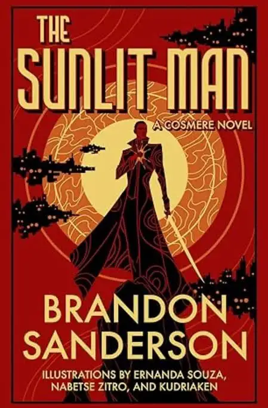

The Sunlit Man: Sanderson in a Hurry

Different flavor of Cosmere this time — a standalone that actually moves. Nomad, a guy on the run, lands on a planet where the sun's constantly moving and stepping into the wrong light at the wrong time will flat-out kill you. Tighter, punchier listen than the Stormlight bricks — more of a survival thriller with magic bolted on than a slow-burn epic.
A good on-ramp, not a top-tier destination
Doesn't hit the highs of Mistborn or Stormlight for me — the world's cool but I never got attached the way I did with Scadrial or Roshar, and a chunk of the payoff leans hard on already knowing the wider Cosmere. Still, as a fast, self-contained listen to slot in between bigger commitments, it did its job. Solid palate cleanser between longer series.
Worth a listen if you're already deep in Sanderson's world and looking for something quick. If you haven't touched his stuff yet, go start with Mistborn or Stormlight instead.